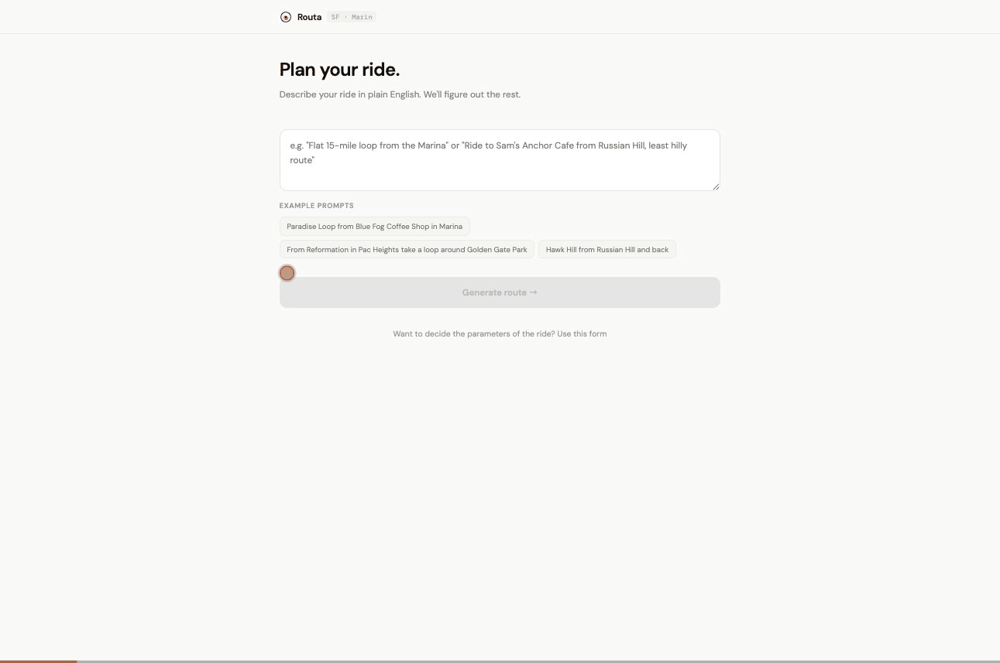
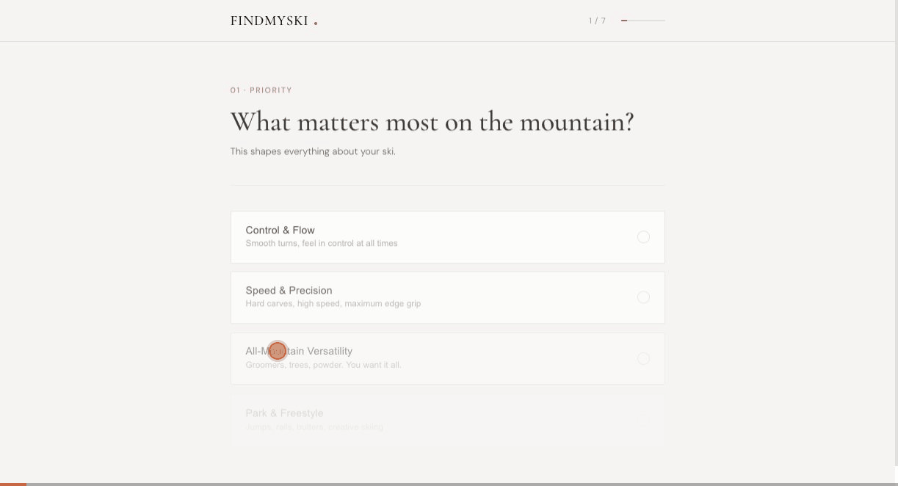

AI PM for Practical 0-to-1 Products · San Francisco
I build practical AI products from 0 to 1, turning ambiguous user problems into clear product bets, shipped experiences, and measurable outcomes. Over the past 5+ years, I've worked across LLM platforms, consumer products, and marketplace bets with a bias toward usefulness over hype.
Arcade AI · Feb 2025 – Present
Product Manager, Generative AI
Increased prompt engagement from 6% to 40% through iterative A/B testing and onboarding experiments. Led roadmap and prioritization for the creation experience, grounded in user interviews and experiment results.
J.P. Morgan · Jan 2024 – Feb 2025
Product Manager, AI and ML
Owned an in-house LLM enabling real-time search across 12,000 internal documents. Reduced model evaluation cycle time by 16x.
J.P. Morgan · Aug 2023 – Jan 2024
Product Manager, Developer Experience
Independently built a document search LLM using LangChain, Chroma, and the OpenAI API, taking it from discovery through development to handoff in 4 months.
At work, I've built agents for bug filing, PRD generation, and user interview summarization. This space highlights what I build on my own time — passion projects I scoped, designed, and shipped end-to-end.
Route Planning · NLP · Mapping
A ride planning tool that lets road cyclists create routes by describing their ideal ride in plain English or using a form for more control
Demo

The Problem
Strava and most GPX tools optimize for distance and connectivity, not ride quality. For road biking specifically, that means you regularly get routed up punishing climbs you didn't ask for, through intersections with heavy car traffic, or onto roads with no shoulder. Every time I wanted to explore a new route around SF I'd spend 30+ minutes in Strava manually adjusting, cross-referencing Google Maps, and checking Street View just to sanity-check the road conditions. It was a whole process before I even got on the bike.
What I Built
A web app where you describe your ideal ride in plain English or use a form for more control, and it generates a route optimized for road cycling on lower traffic streets with manageable elevation. It connects directly to Strava, exports to GPX for Garmin, and shows elevation profiles so you know what you're getting into before you clip in. The whole point was to eliminate the 30-minute pre-ride planning ritual and just get out the door.
PM Instinct Behind It
"The temptation was to build a general cycling tool, but I knew from my own experience that road biking has very specific needs that are different from mountain biking or commuting. Scoping it tightly to one persona in one geography made the product actually useful rather than mediocre for everyone. I also learned a lot about the tradeoffs between routing APIs, elevation data sources, and what 'low traffic' actually means when you try to operationalize it."
Research Tool · Sustainability · Data
An interactive tool for sustainability professionals to compare carbon emission factors across EPA, DEFRA, and GHG Protocol databases and understand where the numbers actually come from
The Problem
Carbon accounting teams rely on emission factor databases to estimate their footprint, but the three major sources — EPA, DEFRA, and GHG Protocol — often disagree significantly. Some activities show nearly 99% variance between sources, and it's not obvious why. Worse, some databases cite each other without adding independent data, creating circular sourcing that inflates false confidence. Teams end up picking a database without understanding the tradeoffs.
What I Built
An interactive dashboard that compares 21 activities across 8 multi-source datasets spanning 5 countries. It maps citation relationships to expose circular sourcing, shows range comparisons across databases, and compares activity-based vs. spend-based calculation methods — revealing gaps as large as 3.3x depending on methodology. The tool includes a recommended stack for which database to use and when, grounded in geography, methodology, and data independence.
PM Instinct Behind It
"Most sustainability tools present emission factors as settled numbers, but the real problem is that practitioners don't know whether to trust them or which source to pick. I focused on making the provenance and methodology visible rather than just showing the numbers — because understanding where data comes from is what actually enables better decisions."
AI Recommender · React · RAG
An AI-powered ski recommender that walks you through a short intake, then explains exactly which ski to buy and why, drawing on curated expert reviews and retailer data
Demo

The Problem
As someone who skis a lot, I kept getting asked by friends what ski to buy. I'd give an opinion but realized I was just guessing based on my own experience. Ski selection is genuinely complex. It depends on ability level, skiing style, body type, terrain preference, and budget. Existing tools either oversimplify to a few dropdowns or dump a spec sheet on you with no guidance on what actually matters.
What I Built
A web app that walks you through a short intake about your ability, goals, body type, and budget. It uses RAG to pull from a curated knowledge base of expert ski reviews (OutdoorGearLab, SKI Magazine, Blister, Switchback Travel, and more), then uses an LLM to synthesize a personalized recommendation with a plain-English explanation. I intentionally made the reasoning more prominent than the recommendation itself, because that's what actually helps someone feel confident in the purchase. Results can be shared via link or emailed directly.
PM Instinct Behind It
"When you're the workaround people use because the real tool doesn't exist, that's a product gap worth filling. The key insight from talking to people was that they didn't distrust the recommendation, they just didn't know how to evaluate it. Explaining the 'why' in plain language is what actually builds confidence, so I made it the centerpiece rather than an afterthought."
Let's build something
linkedin.com/in/vivfeng
I grew up between cultures, speaking Mandarin at home and English everywhere else, which gave me an early instinct for how context shapes communication. I think that's part of why I ended up in product: I genuinely like understanding how different people see the same thing differently.
Outside of work I spend a lot of time outdoors. I ski whenever I can get to the mountains, and I road bike around the Bay Area most weekends. Both of those hobbies turned into the projects on this site, which is probably the most honest summary of how my brain works: if something is annoying me, I'd rather build a fix than complain about it.
I like staying close to the build, and over the past year I've spent a lot of time prototyping, iterating, and shipping side projects alongside my product work.
I studied Business and Data Science at UC Berkeley Haas. I care a lot about using technology for good, and I'm particularly drawn to building AI products in wellness and mental health. Originally from the Bay Area, still based in Russian Hill, SF.
Product
Technical
Community & Recognition
Have an idea you want to collab on, or an interesting event to recommend? Reach out.